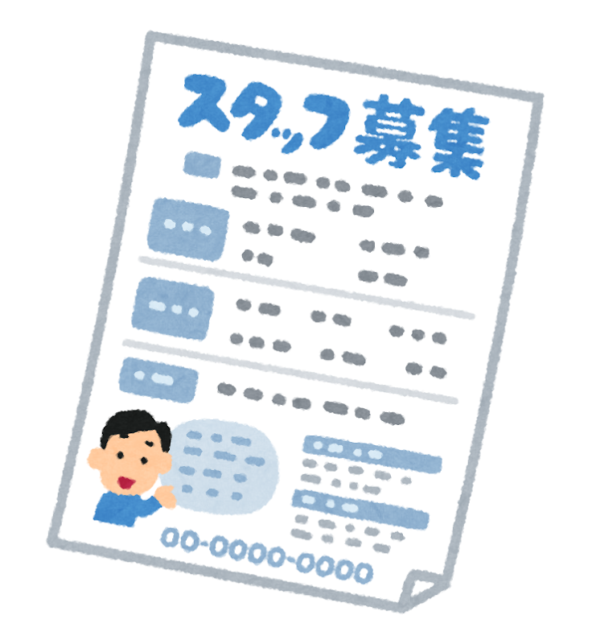

Resources
Resume Templates
Need help crafting a standout resume? Download one of the following templates to get started.
There are endless templates online as well!
- ATS classic HR Resume (Word)
- Classic Management Resume (Word)
- Modern Bold Sales Resume (Word)
- Social Media Marketing Resume (Word)
- 
Interview Tips
- Research and Prepare
- Learn about the company’s mission and values.
- Practice answering common interview questions.
- Present Yourself Professionally
- Wear business formal attire.
- Bring printed copies of your resume.
- Be Polite and Respectful
- Use formal language.
- Thank the interviewer for their time.
- Highlight Key Skills
- Emphasize language skills, cross-cultural adaptability, and teamwork experience.
- Follow Up
- Send a thank-you email within 24 hours to express gratitude and reaffirm your interest..
Useful Words and Phrases
If you're aiming for a career with a Japanese company or in Japan, it's essential to continue honing your language skills and building confidence.
In the meantime, here are some useful words and phrases to keep on hand!
| Japanese | Pronunciation | Meaning |
|---|---|---|
| __と申します。 | __ to mōshimasu. | My name is ___. |
| どうぞよろしくお願いいたします。 | dōzo yoroshiku onegai itashimasu. | I beg your kindness./It’s a pleasure to meet you. |
| 今日はお時間をいただき、ありがとうございます。 | kyō wa ojikan wo itadaki, arigatō gozaimasu. | Thank you for your time today. (Before Interview) |
| 本日はありがとうございました。 | hon jitsu wa arigatō gozaimasu. | Thank you very much for today. (After Interview) |
| もう一度おっしゃっていただけますか。 | mō ichido osshatte itadakemasu ka. | Could you please say it again? |
| 私は___の経験があります。 | watashi wa ___ no keiken ga arimasu. | I have experience as ___. |
| 学歴 | gakureki | Education background |
| 職務経歴 | shokumu keireki | Employment history |
| 長所 | chōsho | Strength |
| 短所 | tansho | Weaknesses |
| 履歴書 | rirekisho | Resume |
| 会社 | kaisha | Company |
| 企業 | kigyō | Corporation / Enterprise |
| 事務所 | jimusho | Office |
| 面接 | mensetsu | Interview |
| 給料 | kyūryō | Salary |
千里の道も一歩から
“A journey of a thousand miles begins with a single step.”
** This is not an actual website, this is not live. This does not represent JAS or JASYP. I am a member of this group, but this is for a school assignment in it's current state. **
** Please do not take any of this at face value. Please direct any communications to the official email : jasypcommunications@gmail.com **